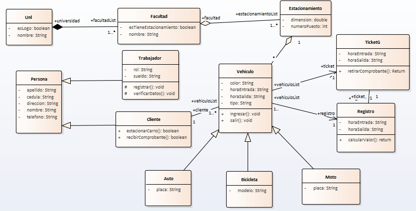

DIAGRAMA UML
TEMA
PARKING_UNL
OBJETIVOS
Objetivos Generales
-->Desarrollar una Interfaz, la misma que nos ayude a registrar cualquier tipo de vehiculo que ingrese a la Univeridad
ALCANCE DEL PROYECTO
El presente proyecto tiene como finalidad hacer un registro ordenado del numero de carros que ingresan a una respectiva facultad de la Universidad Nacional de Loja, asi mismo este programa pretende hacer un registro con los siguientes datos: Nombre del dueño,Tipo de vehiculo, Color del vehiculo , Numero de puesto estacionado, el objetico principal es el de registrar todo tipo de vehiculo que ingrese, sin importar que este sea un carro, motociclqueta.bicicleta,etc. Ademas que se mostrara con una interfaz demasiado amigable y dinamica, esto con el fin de que al momento de utilizarla sea interactiva y no dificil de utilizarla.